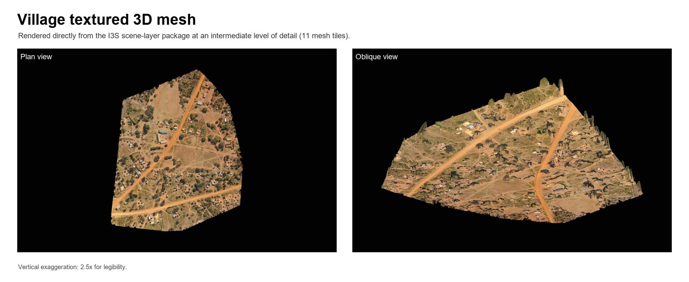

MTUKUZI / AN EDUCATIONAL CONTRIBUTION
Field observations
become material
for learning.
Raphael Sutiono and Kytt MacManus developed a learning module from the Zambia/Mtukuzi fieldwork. It connects drone-data organization and interpretation with local follow-up and open-science practice.
The contribution draws on selected-site mapping near Mtukuzi and work with University of Zambia colleagues. It asks how spatial observations can inform useful questions while making the data's limits clear.
Columbia University · EFPL + CIESIN
Field collaboration with University of Zambia colleagues

CONTINUE WITH TOPSTSCHOOL
Learning resources
with their educational community.
TOPSTSCHOOL is the educational home for the module. Its public catalog brings together Earth science learning resources and community contributions.
Explore the TOPSTSCHOOL learning catalog ↗
This link opens the existing catalog of published resources.
OBSERVATION & INTERPRETATION
A view of place
starts a conversation.
Images can show visible relationships among paths, cultivated areas, buildings and vegetation. Local knowledge and field checks are needed to understand use, priorities and conditions beyond the camera's view.
Photogrammetric models describe image-derived geometry. Image detail and ground sampling distance do not establish independent positional accuracy. These display previews cannot establish water quality, ownership or agricultural outcomes.
